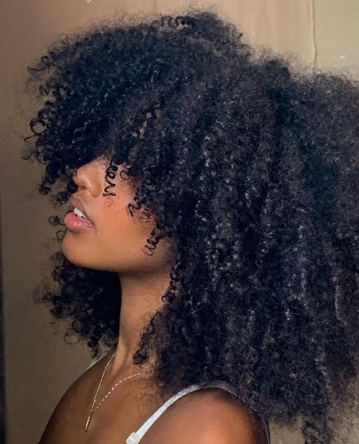
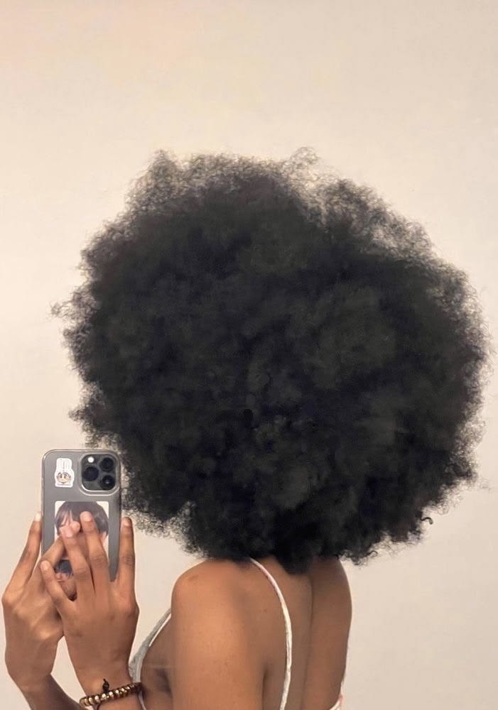

Crespos
Características
Os cabelos crespos possuem a curvatura mais fechada entre todos os tipos.
Eles são classificados nas curvaturas:
4A
apresenta pequenos cachos em formato de mola
4B
possui um padrão em zigue-zague com menos definição natural
4C
curvatura bastante fechada, com muito volume e fator de encolhimento
Por causa dessa estrutura, a oleosidade natural tem ainda mais dificuldade para chegar às pontas, tornando os fios naturalmente mais secos e delicados. Por isso, hidratações frequentes, umectações com óleos vegetais e produtos nutritivos são fundamentais para manter o cabelo saudável.


Os cabelos crespos são extremamente versáteis, permitindo diversos penteados, tranças, twists, black power e finalizações. Além de sua beleza única, representam identidade, resistência e valorização da diversidade dos diferentes tipos de cabelo.